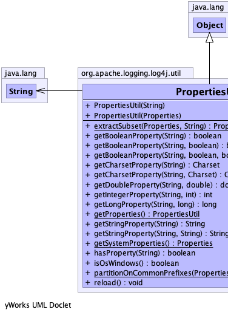
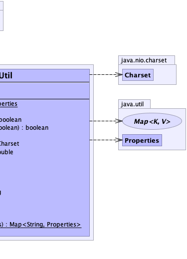

public final class PropertiesUtil
extends java.lang.Object
Provides utility methods for managing Properties instances as well as access to the global configuration
system. Properties by default are loaded from the system properties, system environment, and a classpath resource
file named . Additional properties can be loaded by implementing a custom
PropertySource service and specifying it via a ServiceLoader file called
META-INF/services/org.apache.logging.log4j.util.PropertySource with a list of fully qualified class names
implementing that interface.
PropertySource|  |  |
| Constructor and Description |
|---|
PropertiesUtil(java.util.Properties props)
Constructs a PropertiesUtil using a given Properties object as its source of defined properties.
|
PropertiesUtil(java.lang.String propertiesFileName)
Constructs a PropertiesUtil for a given properties file name on the classpath.
|
| Modifier and Type | Method and Description |
|---|---|
static java.util.Properties |
extractSubset(java.util.Properties properties,
java.lang.String prefix)
Extracts properties that start with or are equals to the specific prefix and returns them in a new Properties
object with the prefix removed.
|
boolean |
getBooleanProperty(java.lang.String name)
Gets the named property as a boolean value.
|
boolean |
getBooleanProperty(java.lang.String name,
boolean defaultValue)
Gets the named property as a boolean value.
|
boolean |
getBooleanProperty(java.lang.String name,
boolean defaultValueIfAbsent,
boolean defaultValueIfPresent)
Gets the named property as a boolean value.
|
java.nio.charset.Charset |
getCharsetProperty(java.lang.String name)
Gets the named property as a Charset value.
|
java.nio.charset.Charset |
getCharsetProperty(java.lang.String name,
java.nio.charset.Charset defaultValue)
Gets the named property as a Charset value.
|
double |
getDoubleProperty(java.lang.String name,
double defaultValue)
Gets the named property as a double.
|
int |
getIntegerProperty(java.lang.String name,
int defaultValue)
Gets the named property as an integer.
|
long |
getLongProperty(java.lang.String name,
long defaultValue)
Gets the named property as a long.
|
static PropertiesUtil |
getProperties()
Returns the PropertiesUtil used by Log4j.
|
java.lang.String |
getStringProperty(java.lang.String name)
Gets the named property as a String.
|
java.lang.String |
getStringProperty(java.lang.String name,
java.lang.String defaultValue)
Gets the named property as a String.
|
static java.util.Properties |
getSystemProperties()
Return the system properties or an empty Properties object if an error occurs.
|
boolean |
hasProperty(java.lang.String name)
Returns
true if the specified property is defined, regardless of its value (it may not have a value). |
boolean |
isOsWindows()
Returns true if system properties tell us we are running on Windows.
|
static java.util.Map<java.lang.String,java.util.Properties> |
partitionOnCommonPrefixes(java.util.Properties properties)
Partitions a properties map based on common key prefixes up to the first period.
|
void |
reload()
Reloads all properties.
|
public PropertiesUtil(java.util.Properties props)
props - the Properties to use by defaultpublic PropertiesUtil(java.lang.String propertiesFileName)
propertiesFileName - the location of properties file to loadpublic static PropertiesUtil getProperties()
public boolean hasProperty(java.lang.String name)
true if the specified property is defined, regardless of its value (it may not have a value).name - the name of the property to verifytrue if the specified property is defined, regardless of its valuepublic boolean getBooleanProperty(java.lang.String name)
"true" (case-insensitive),
then it is returned as the boolean value true. Any other non-null text in the property is
considered false.name - the name of the property to look upfalse if undefined.public boolean getBooleanProperty(java.lang.String name,
boolean defaultValue)
name - the name of the property to look updefaultValue - the default value to use if the property is undefineddefaultValue if undefined.public boolean getBooleanProperty(java.lang.String name,
boolean defaultValueIfAbsent,
boolean defaultValueIfPresent)
name - the name of the property to look updefaultValueIfAbsent - the default value to use if the property is undefineddefaultValueIfPresent - the default value to use if the property is defined but not assigneddefaultValue if undefined.public java.nio.charset.Charset getCharsetProperty(java.lang.String name)
name - the name of the property to look upCharset.defaultCharset() if undefined.public java.nio.charset.Charset getCharsetProperty(java.lang.String name,
java.nio.charset.Charset defaultValue)
Log4j-charsets.properties on the class path.name - the name of the property to look updefaultValue - the default value to use if the property is undefineddefaultValue if undefined.public double getDoubleProperty(java.lang.String name,
double defaultValue)
name - the name of the property to look updefaultValue - the default value to use if the property is undefineddefaultValue if it was undefined or could not be parsed.public int getIntegerProperty(java.lang.String name,
int defaultValue)
name - the name of the property to look updefaultValue - the default value to use if the property is undefineddefaultValue if it was undefined or could not be
parsed.public long getLongProperty(java.lang.String name,
long defaultValue)
name - the name of the property to look updefaultValue - the default value to use if the property is undefineddefaultValue if it was undefined or could not be parsed.public java.lang.String getStringProperty(java.lang.String name)
name - the name of the property to look upnull if undefined.public java.lang.String getStringProperty(java.lang.String name,
java.lang.String defaultValue)
name - the name of the property to look updefaultValue - the default value to use if the property is undefineddefaultValue if undefined.public static java.util.Properties getSystemProperties()
public void reload()
public static java.util.Properties extractSubset(java.util.Properties properties,
java.lang.String prefix)
properties - The Properties to evaluate.prefix - The prefix to extract.public static java.util.Map<java.lang.String,java.util.Properties> partitionOnCommonPrefixes(java.util.Properties properties)
properties - properties to partitionpublic boolean isOsWindows()